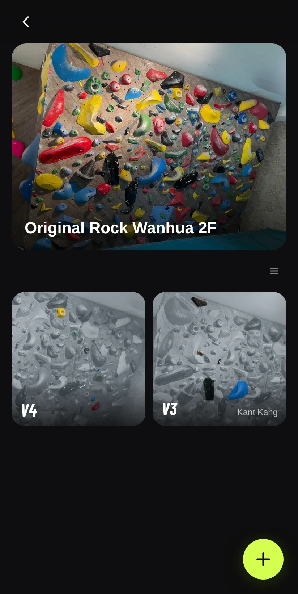

Give your gym app route viewing and setting, without building it
Hand your wall photos to Climbio and get a wall you can tap holds on, then drop it into the app you already have. Climbers view and set routes inside your app; your accounts, records and database stay untouched.
What your gym gets
Nothing to build
The viewer and setter are ready-made: add one embedded page (an iframe on the web, a WebView in a native app), tell it the wall id, and you are done.
Updating the wall is uploading one photo
Staff pick a wall photo in your admin, holds are detected right in the browser, and one tap on publish gives you an interactive wall. For more precision, your AI agent can refine it with the Studio process.
Climbers find you elsewhere
Your wall also shows up in Hold Cat’s “Find walls”, and routes appear in both your app and Hold Cat, so you never keep two copies.
Your users and records stay yours
Climbio stores only walls and routes. How users map to routes, send logs and comments are all up to your app; submissions use your website as identity, with no key to apply for.
See it in action
This is the route-setting screen inside a gym app: tap holds on the wall to set a route (demo only, nothing is saved). Viewing is the same embedded page in another mode.

Everyone else sees the same wall
Once published, your wall also appears in Hold Cat. Climbers can view and set routes there without installing your app, and routes show up in both places.
Open Hold CatHow it works
- Your AI agent wires it up: a “wall photo” embedded page in your admin, and the viewing and setting embedded page on your route page.
- Staff upload a wall photo: just like updating the photo you already keep, holds are detected, they tap publish, and your app stores the returned wall id. A new photo is a new wall.
- Users set routes: after setting a route they tap submit and it is published on the wall; your app keeps the returned route id and maps it to your own user.
Copy for your AI agent
Paste it to the AI agent you already use (Claude, ChatGPT or Codex all work). After reading the whole process it will ask you, in one list, for the details it needs, and you just answer.
Please read https://github.com/climb-io/climbio/blob/main/docs/gym-onboarding.md first and follow its process to integrate Climbio into our gym. At the start, ask me in one list for all the details you need instead of asking several times; if I cannot answer something, give me options and a recommendation instead of making it up.The technical details live on GitHub and your AI agent reads them itself: